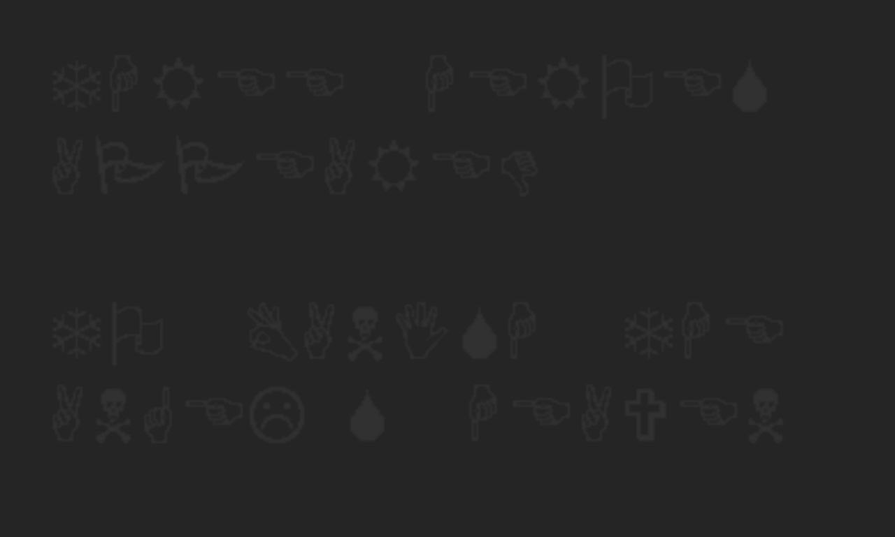

I DETTAGLI
Il diavolo è nei dettagli, no? Ricordi ad esempio quelle sezioni strane dove devi ottenere delle “uova” andando avanti e indietro in specifiche stanze? O Ralsei che approfitta della nostra assenza per parlare in privato a Kris? Non ha importanza come rispondi, adesso ci concentreremo su quei dettagli, spero che la live non stia andando troppo per le lunghe, ma ci tengo ad evidenziare tutto quello che potrebbe essere importante. E partirei parlando da certi personaggi, specificamente da:
Kris e la sua relazione col giocatore
Kris è un personaggio scritto, con volontà e passato e su cui noi giocatori prendiamo un controllo forzato. Nonostante sia un ragazzino di poche parole, si possono intuire diverse cose sulla sua personalità: per esempio, dal fatto che tutti i personaggi, anche quelli che lo conosco da anni e anni, si riferiscono a questa persona con i pronomi They/Them (la wiki ha scherzosamente messo ben cinquantacinque references per sottolineare questo punto a chi continua a sbagliare), quindi possiamo dedurre che sia una persona non binaria. Chissà se questa caratteristica avrà qualche risvolto di trama, ma per il momento sembra solo essere un suo tratto personale che tutti in città rispettano (ma che non è facile rispettare in un italiano “ufficialmente” corretto grammaticalmente).
Kris è stato adottato dalla famiglia Dreemur ad un’età non specificata. Non si sa precisamente quando, ma ha passato un periodo d’infanzia dove ha posseduto l’ingenuità di credere che gli potessero crescere le corna da mostro come al resto della famiglia, tant’è che ne indossò a lungo un paio di finte.

Secondo una teoria verosimile, l’oggetto che rappresenta Ralsei nel light world sono proprio quelle corna; Kris se le porta costantemente dietro in maniera affettiva e come ricordo (e non le vediamo nel suo inventario esattamente come per il coltello) e sarebbe grazie a questo che Ralsei si trova sempre in ogni nuovo Dark World, anche se apparentemente sembra rimanere a CastleTown quando ce ne andiamo, quindi forse non se le porta dietro costantemente e Ralsei si sposta in qualche altro modo. Ralsei sarebbe la versione “ideale” di Kris stesso, una versione mostro gentile e calma che vorrebbe essere per sentirsi più incluso nella famiglia. But it’s just a theory, a game theory.
Un elemento a prova di questo potrebbe essere che il tema dell’umanità sembra un tasto dolente per Kris, che chiude velocemente un libro sull’umanità alla vista di una foto di altri umani, anche se ovviamente potrebbero esserci altri motivi per questa reazione.
A parte quello, sembra aver passato un’infanzia normale. Toriel maestra a scuola, Asgore capo della polizia (ma successivamente cacciato per ragioni sconosciute, probabilmente le stesse che hanno portato al divorzio della coppia), Asriel era il suo adorato fratello, con cui passava tanto tempo e giocava a videogiochi come Smash (Viene menzionato come Asriel usasse il controller “tarocco” lasciando a Kris quello originale, o come il personaggio preferito di Asriel fosse “la lucertola verde”, evidentemente Yoshi); Kris sembra sentirne molto la mancanza, infatti la sua stanza nella magione di Queen presenta ricerche internet su quando inizino le vacanze della sua università.
Ha avuto un’amicizia molto profonda con Noelle (o almeno lei l’ha vissuta così, definisce Kris come “L’unica persona a cui sente di poter dire di “No”” oltre che al proprio padre), la quale però era vittima dei numerosi scherzi e marachelle di Kris, a volte anche piuttosto spaventosi, come il nascondersi sotto al suo letto per terrorizzarla e anche un rapporto con Dess, la sorella di Noelle.
Loro 4 sembravano essere un gruppetto abbastanza unito, fino a che non è successo qualcosa a Dess… ma ne riparleremo.
Per il momento concentriamoci su Kris, e come il nostro controllo sembra averlo cambiato profondamente.
Molti personaggi in città notano come Kris sembra essere diverso dal solito, persino malato.
Provando a suonare il pianoforte all’ospedale, si sentirà solo una nota stonata, e l’infermiera noterà come di solito suona molto meglio; addirittura nel ch2 Susie nota un’espressione molto frustrata da parte di Kris in questa stessa situazione.
Kris chiude gli occhi quando proviamo a spiare nella stanza di Asriel nel dark world di Queen, presumibilmente perché le stanze erano create in base alle ricerche online e Kris non voleva che invadessimo la privacy del fratello (o forse cercava di nasconderci qualcosa di più serio? O ancora aveva paura di vedere qualcosa che non voleva vedere? Chissà).
Nella Weird Route Noelle noterà come la voce di Kris sembra estremamente diversa e più fredda, forse perché sta sentendo la “nostra”. Si collegherebbe al fatto che nella battaglia finale della weird route contro Spamton è Kris a chiedere aiuto a Ralsei e Susie, ma siamo “noi” a chiamare Noelle.
Dopo gli eventi contro Spamton nella route normale Kris rimane scombussolato, arrivando ad urlare “No” selezionando quella risposta quando gli viene chiesto se stesse bene, o in caso di risposta positiva, lo dice in maniera molto esitante. In entrambi i casi Susie e Ralsei cercheranno di consolare e calmare Kris da quanto è successo. Senza contare tutti i momenti dove Kris decide autonomamente di riprendere temporaneamente controllo, o addirittura i momenti dove apparentemente Kris e Ralsei parlano in privato mentre noi giocatori siamo impegnati a seguire Susie quando affronta Lancer nel ch1 o il suo incontro romantico con Noelle nel ch2, dove vediamo solo la conclusione della loro apparente conversazione.

Un ultimo piccolo dettaglio forse vitale. Kris aveva un savefile che sovrascriviamo.
Questa cosa si vede SOLO se il gioco è “fresco”, se non ha mai salvato prima. In altre parole puoi vedere questo dettaglio solo alla tua prima run o se resetti il gioco eliminando tutti i savefile.
Insomma, siamo chiaramente e nettamente separati da Kris che sembra essere un semplice teenager abbastanza bizzarro, ma nonostante ciò, è chiaro come ci stia tenendo nascosto tanto di serio e importante. Aveva pianificato di aprire la Fontana davanti alla tv, sembra avere più coscienza di quanto non parrebbe. È forse Kris il cavaliere? Sarebbe possibile controargomentare dicendo che Noelle e Berdly erano entrati nella sala computer prima della creazione della fontana, dato che i loro libri e quaderni erano già disposti sul tavolo e che in quel frangente di tempo eravamo in controllo di Kris. Allo stesso tempo si potrebbe ignorare la posizione dei libri e di Noelle e Berdly addormentati sul tavolo come qualcosa di minore e non rilevante a cui Toby&Team semplicemente non avevano considerato durante lo spritework.
Ma in caso non fosse il Cavaliere perché creare la Fontana nel soggiorno? Perché questo piano contorto per attirare la polizia? Propongo due possibili risposte: è un teenager impulsivo e ignorante, è disposto a prendersi il rischio pur di vivere un’altra avventura e la polizia era una conseguenza non voluta nel cercare di trovare in maniera contorta un modo per far restare Susie a casa; oppure, in entrambi i capitoli possiamo cercare di avvisare Undyne dei Dark World (inutilmente, perché non ci crede). Forse questa è l’intenzione di Kris, dimostrare agli adulti l’esistenza di questo pericolo? Per il momento non abbiamo risposte, quindi spostiamoci su:
Lost Girl
Dess è la sorella di Noelle di cui non si sa quasi niente se non che le sia successo qualcosa di tragico. Abbiamo alcuni racconti sul suo passato, tipo come il forzare Kris a scusarsi con Noelle per i suoi scherzi, un racconto di Noelle di alcuni momenti della loro infanzia, o come nel backstory di Berdly vediamo Noelle crollare emotivamente quando deve fare lo spelling di "December"
Non è ben definito cosa sia successo a Dess. Tutti i momenti che la menzionano parlano di lei al passato e in maniera molto rammaricata e nostalgica; Qualunque cosa sia successa, non è nulla di buono. Al momento la cosa più probabile è che sia “Solo” scomparsa, senza conferma della sua morte e ci sono diversi indizi a prova di questo: innanzitutto il tema associato a lei si chiama “Lost Girl”: potrebbe significare che è stata “persa” e diventata introvabile (o anche che abbia “perso” la sua via morale e abbandonato tutto e tutti, ma lo trovo improbabile); Un altro indizio che indica sia viva è che al cimitero della città non ci sia la sua tomba(o forse semplicemente non è stato trovato il suo corpo…?) infatti ci sono solo quelle di coloro che in UT erano gli Amalgamates e di Gerson Boom, un fabbro diventato scrittore della novella “Lord of The Hammer”, il quale apparivaquale appariva in UT come shopkeeper.
Interessante notare come nascosti nel codice di gioco di entrambi i capitoli ci siano due dialoghi “Inutilizzati” di una persona dispersa che chiede aiuto
Capitolo 1:

Capitolo 2:

Si teorizza che si tratti proprio Dess, che in qualche modo si è persa nei file di gioco e questo è il suo unico modo di comunicare. Ci sono forse altri messaggi nei capitoli che stai per giocare? Lo scoprirai nel documento di chicche post capitoli, hehehe.
GASTER
Sarai familiare con Gaster, una strana entità di cui conosciamo solo indizi sparsi nel tempo e nello spazio, quindi facciamo solo lista abbastanza completa degli elementi che mostrano la sua esistenza e importanza per DT:
- I dialoghi dei suoi “followers”. Altri NPC segreti grigi e “strani” che non parlano di Gaster, come Monster Kid nel video linkato, sono chiamati Goner; è presumibile che anche i “follower” siano dei goner, e come si chiama nei file il nostro vessel che creiamo a inizio DT e viene scartato? “Goner”. Da qui in poi mi riferirò alla creazione del vessel come “Goner Maker”.
-
Lo sprite del “Mystery Man”. Si presume che sia Gaster perché appare solo se il FUN value di UT è 66; “666” ripetuto sono le sue statistiche di battaglia inutilizzate e anche il “typeface value” del suo font nella Entry 17. (La Voce Misteriosa a inizio DT ha lo stesso value). Non solo, il suono di quando scompare quando ci interagisci, se suonato al contrario e rallentato è molto simile al suo tema musicale. A proposito:

- Gaster’s theme. . Nella stanza del sound test è possibile sentire questa traccia intitolata così. Il nome del file è “mus_st_him” e siccome il tema che suona durante il “Goner Maker” in DT si chiama “Another Him” è molto probabile che sia un’altra prova che la Voce Misteriosa si tratti di Gaster.
- Un noto youtuber (Andrew Cunningham) ha fatto un’analisi musicale approfondita di pressoché tutte le canzoni del gioco e sostiene che il tema originale di Gaster appaia per davvero in alcune canzoni, specificamente nel tema di battaglia di Jevil e nel “Freedom leitmotiv”.
-
Il sito ufficiale di DT (deltarune.com), possiede due salvataggi sulla wayback machine nel 2015 pochi mesi dopo la release di UT e l’altro nel 2016. Il primo è un messaggio in wingdings quasi illeggibile senza alzare la luminosità che recita “THIS NEXT EXPERIMENT SEEMS VERY VERY INTERESTING” (stessa frase presente nella entry 17, che appare nel prossimo punto), il secondo è un altro messaggio ancora più buio sempre in wingdings che recita “THREE HEROES APPEAR TO BANISH THE ANGELS HEAVEN”, parte della profezia. Considerando che solo Toby e chi lavora con lui potevano sapere di DT, è molto probabile che sia stato lui stesso a fare questi backup. Questo perché come probabilmente saprai, aveva in mente DT da ben prima di UT, il quale è quasi considerabile “solo” un esercizio di stile, e ha anche parlato di come abbia avuto un sogno febbrile sul finale di DT. Ne approfitto per ricordare che Toby sostiene che DT “avrà un solo finale”

- Entry 17: dark, darker, yet darker. Messaggio segreto recuperabile smanettando con i file in UT ed entrando nella stanza “room_gaster”. Qui è possibile udire lo stesso suono che suona quando proviamo a usare il cellulare in un Dark World.
- Velocizzando del 666% il suono che si sente vicino al bunker in DT, si sente ancora quel suono inquietante della Entry 17. Ricordiamo che nel ch2 c’è un’interessante scena riguardo questo bunker.
- La compagnia di Toby che detiene il trademark di UT e DT si chiama “Royal Sciences LLC”, e qui dico l’ovvio per i distratti ma il titolo di Gaster in UT era “Royal scientist”. Questo, il modo in cui parla di DT come “esperimento”, i suoi messaggi durante il Goner Maker e quando fai un game over (solo nel ch1), il fatto che provando a usare il nome “Gaster” in entrambi i giochi li faccia resettare, i suoi messaggi sul sito, i suoi tweet alla release dei ch 1 e 2; tutto questo fa teorizzare che Gaster sia una sorta di “Dungeon Master” per i 2 giochi, o almeno DT.
-
“Beware of the man who speaks in hands” è un messaggio criptico che ci comunica il gondoliere del fast travel di UT. Il font di Gaster usa delle mani, quindi si presume parli di lui.

- I cannoni che sans usa nella sua battaglia nella genocide, sono chiamati nei file “gaster_blaster”. Questo e il fatto che lui e suo fratello siano gli unici altri personaggi che utilizzano font specifici e strani, indica qualche tipo di collegamento.
- Questa potrebbe essere una coincidenza, ma “Gaster” è un anagramma di “Stager” (una persona che prepara uno spettacolo), che darebbe credito alla teoria che Gaster sia il “Dungeon master”.
- I (probabilmente) suoi tweet prima delle release dei capitoli. 24 ore prima della release del ch1, l’account twitter di Undertale è stato “hackerato” con profilo nero e nome oscurato, poi ci invita in Deltarune. Stesso per ch2 e ch3-4. ch1 ch2 ch3-ch4
Alla fine della fiera, Gaster è un’entità quasi esterna ai giochi. Tutti questi indizi sono appunto solo indizi. È ovvio che se nei futuri capitoli dovesse diventare rilevante in maniera diretta e avere un ruolo importante, la sua esistenza dovrebbe stare in piedi con il gioco e basta senza che sia necessario sapere tutto questo, ma è comunque interessante essere informati su tutti questi dettagli.
Non troppo influente, non troppo ininfluente
A questo punto parliamo di qualcosa che si teorizza sia legato a lui, le uova.
Ricordi come nel Ch1 e nel Ch2 ci siamo due misteriose uova ottenibili facendo la strana azione di andare avanti e indietro fra 2 stanze in cui si sente resettare la musica dell’area? Il ch2 presenta un ulteriore indizio con un disegno dell’albero in cui si nasconde l’Uomo e la scritta “There’s a room in between”.
La descrizione delle uova recita “Not too important, not too unimportant”, non succede nulla se non un particolare (e unico) suono quando si prova ad usarle, nel light world si possono “depositare” in alcuni luoghi e viene tenuto conto di quanto tu ne abbia ottenute in maniera simile ai ShadowCrystal (interessante come rimangano uova sia nel dark world che nel light world).
Mi raccomando, cerca di trovarle nei prossimi capitoli. Dopotutto, non sono influenti, ma neanche troppo ininfluenti… In ogni caso chiediamoci, l’uomo dietro l’albero che ti fa questo strano dono si tratta di Gaster? Beh… probabilmente no. Abbiamo due indizi a riguardo, uno di questi rivelato con i trofei rilasciati con i Ch3-4 per la versione PlayStation (niente spoiler ovviamente).
Il Goner Maker ha nel suo codice di gioco delle variabili chiamate “Egg” che servono ad indicare degli errori. Se il codice fallisce a realizzare una variabile corretta, “Egg” è una delle possibili variabili di errore.
Il secondo indizio molto più importante, è che se completi un capitolo SENZA ottenere l’uovo, ottieni un trofeo che dice “Complete Chapter X without ISSUE”; al contrario se lo ottieni questo trofeo non compare. Se diamo credito alla teoria che Gaster sia una sorta di Dungeon Master, sembra considerare le uova come un problema, e se ci pensi ha senso perché il modo per ottenerle è praticamente forzare un glitch. Personalmente credo che non sia da escludere si possa trattare comunque di Gaster, magari è un frammento della sua personalità o essenza, perché dopotutto si è “frantumato nel tempo e nello spazio”, magari è una parte di questo scienziato che ha deciso di rigettare.
Ehi ma a proposito di Issue, Susie è un suo anagramma, e lei sembra impedirci di giocare il gioco come inteso togliendoci alcune scelte, hmmm…
Reminder finali di altre cose opzionali ma potenzialmente importanti
- I dialoghi di Onion-San, ch1 e ch2. Il secondo è particolarmente criptico, forse è collegato a questo?
- I libri del secondo piano della biblioteca. Un npc molto bizzarro che è la forma “normale” di uno dei follower di Gaster ci invita a leggerli nel ch1, ma impedendoci di farlo fino al ch2 dove comunque ci permette di leggerne solo due. Il nome dello sprite di quell’NPC è “spr_normalnpc”, quindi è stato denominato appunto Normal NPC. Niente di sospetto, è tutto normale. Ho mostrato quello sull’umanità nella sezione di Kris, quindi ecco il secondo libro sulle ANIME.
- star walker. Se non recuperi gli incontri con questo personaggio leggendario e vitale, si può buttare tutta la run
- La madre di Noelle non è ancora apparsa ufficialmente, ma sappiamo che è il sindaco della città, talmente tosta che apparentemente non avrebbe bisogno della polizia per gestire il poco crimine presente in città, ed è particolarmente fredda verso Noelle, tanto da far preoccupare Rudy e intimorendo la povera ragazza così tanto che quando dimentica le proprie chiavi, non vuole neanche andare a chiederle il mazzo quando rimane chiusa fuori casa nel ch1.
- Noelle è possibilmente l’Angelo della profezia.
- I dialoghi di Alvin, il prete della città, nel secondo capitolo.
- Due paroline su Sans: è il solito comico che fa battute meta. Si è “fatto amica” Toriel, nel ch1 ci invita a giocare con “suo fratello” il giorno dopo, ma nel ch2 non è possibile, invitandoci ad aspettare “un po’ di più, un giorno, o forse 2 anni…”, una chiara battuta sull’attesa dei capitoli. Forse il capitolo 3 è la volta buona per Papyrus…?
Un AMICO dentro me al gioco e gli Sweepstakes
È ora di parlare di chicche perlopiù meta. C’è una terza entità misteriosa oltre che a Gaster e all’uomo delle uova (In realtà ce ne sarebbe una quarta, Everyman, ma dato che sembra più un easter egg lo menzioneremo più in là nel documento di chicche dei ch3-4). È nel capitolo 2 e appare per pochissimi istanti: nelle profondità della magione di Queen, vediamo questo strano sorriso inquietante con occhi rosa e gialli (come gli occhiali di Spamton?!). Tutto quello che sappiamo su di essa è che nei file si chiama “IMAGE_FRIEND” e si trova nella categoria dei “DEVICE”. I device sono categorizzati come alcune cose che connettono meccanicamente il giocatore a Deltarune, come il menù dei salvataggi. Se sei curioso, ecco uno screen dell’aspetto originale del menù di caricamento menzionato alla fine di quel post. (credo sia cambiato leggermente a livello visivo con le successive release, ma non ho trovato altri screen)
Perché ne stiamo parlando? Perché nel corso degli anni Toby ha suggerito una sua possibile maggiore rilevanza in futuro. Durante gli Spamton Sweepstakes (una campagna di beneficenza a tema Deltarune) Toby ha incluso e nascosto diversi link che portano a curiosità o teaser per i ch3-4. Non vedrai la maggior parte di questi teaser perché non devi mica aspettare anni per vedere a cosa porteranno o cosa significano, ma ci sono comunque alcune curiosità e implicazioni interessanti che sarebbe meglio tu veda.
Considera alcuni di questi link come una specie di minigioco. Ci sono diversi segreti da scoprire e ti metto degli indizi coperti da spoiler per indicarti cosa fare, il testo sarà bianco e dopo i due punti, quindi per vederlo evidenzialo col mouse. Partiamo con i link relativi a FRIEND (fai caso sia ai nomi dei link che ai nomi delle schede):
deltarune.com
Sulla pagina in cui trovi la sedia, c’è qualcosa di ripetitivo da fare.
Clicca ripetutamente sulla sedia fino a che non succede qualcosa. Se non lo hai fatto, fai specialmente caso al nome della scheda di questa pagina.
Clicca su un numero abbastanza grande di gatti, ci vogliono circa 3 minuti, ma ne vale la pena.
Nome dei link.
Ogni finestra ha un nome del link diverso e disordinato.
Forse la finestra corretta ha una differenza…
La finestra corretta ha “l’uovo” nella parte superiore capovolto, si trova a circa nel terzo quarto della barra scorrevole orizzontale.
I Blog di Noelle
Inclusi negli sweepstakes, c’erano diversi link che portavano a dei blog o note scritti da Noelle. Ce ne sono diversi, alcuni dove racconta di un episodio dove Kris la spaventa con un cartone della pizza con la faccia di Ice-e (a cui Dess aveva bruciato gli occhi perché la sorellina ne era paranoica), Noelle che riceve uno strano uovo blu come virus (chiaramente un pipis) o dei racconti su un videogioco su cui passava il tempo, CatPetterz. Ma per non andare troppo per le lunghe, vorrei concentrarmi su due in particolare, perché li trovo molto interessanti ed emozionanti. Includerò un link ad un’immagine con una mia traduzione per facilitarti la vita.
Infanzia con Kris
Ma per non andare troppo per le lunghe, vorrei concentrarmi su due in particolare, perché li trovo molto interessanti ed emozionanti. Includerò un link ad un’immagine con una mia traduzione per facilitarti la vita.
Susie e il bullismo
Se sei stanco, puoi saltare questo, ma è comunque parecchio interessante: blog di Noelle che parla di uno strano episodio di bullismo verso Kris da parte di Susie, link alla traduzione
Link finali e curiosità
Ci sarebbe altro da menzionare (In particolare uno che potrebbe essere considerato “spoiler”, quindi lo riserviamo per un’altra volta) e spero che lo faremo in futuro, ma per il momento questo può bastare. Concludiamo con tre altri link, due che confermano lo stato di Dess come “persa”
-
https://deltarune.com/december/
un 404 finto con la UI di Internet Explorer. december -
https://deltarune.com/dess/
(il remix di “Lost Girl” che suona quando clicchi la chitarra ha come nome nei file “find_her.ogg”) red guitar - E infine un messaggio di Spamton pieno di ripicca, NON TOCCARE